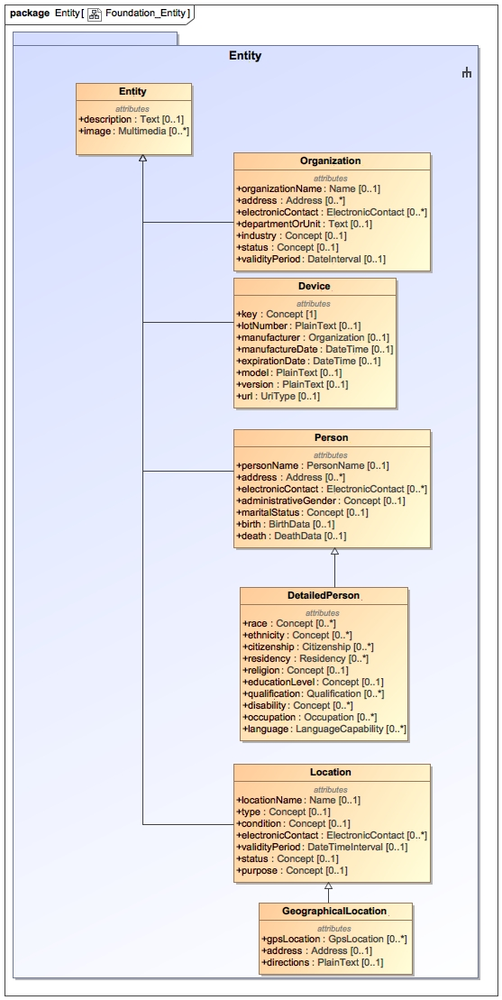

The Entity package introduces the Entity supertype from which all entities inherit and a number of core specializations of entities that are not unique to the health domain such as Organization, Device, Person, and Location. All entities can theoretically take on roles in a process or activity.
